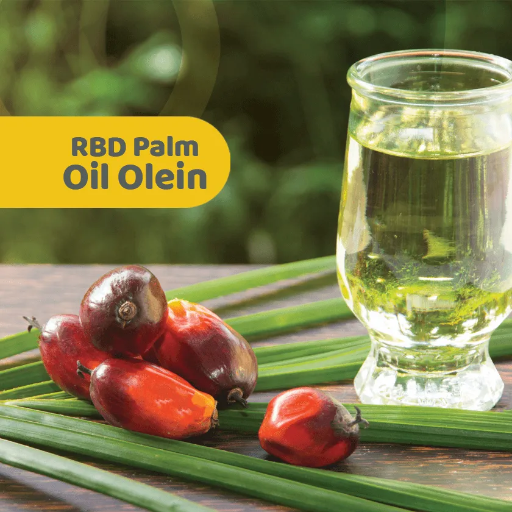

04 · RBD Palm Olein
Core product
RBD Palm Olein for cooking, frying and food processing.
Naturz lists a wide range of palm olein grades for OEM cooking oil service and export buyers.
CP5
CP6
CP7
CP8
CP10


Naturz lists a wide range of palm olein grades for OEM cooking oil service and export buyers.
